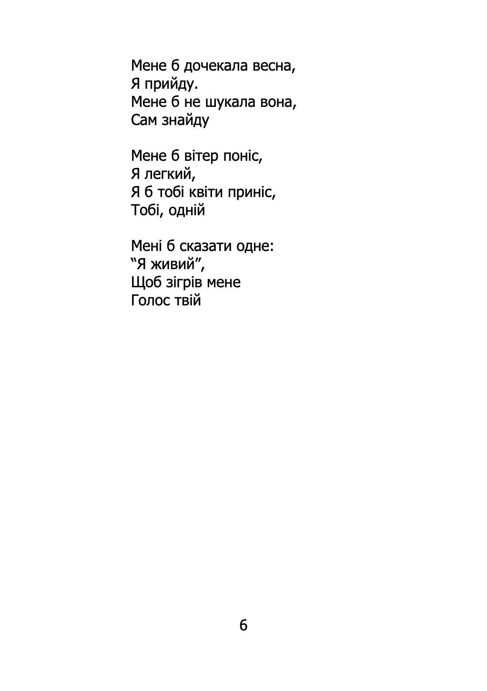
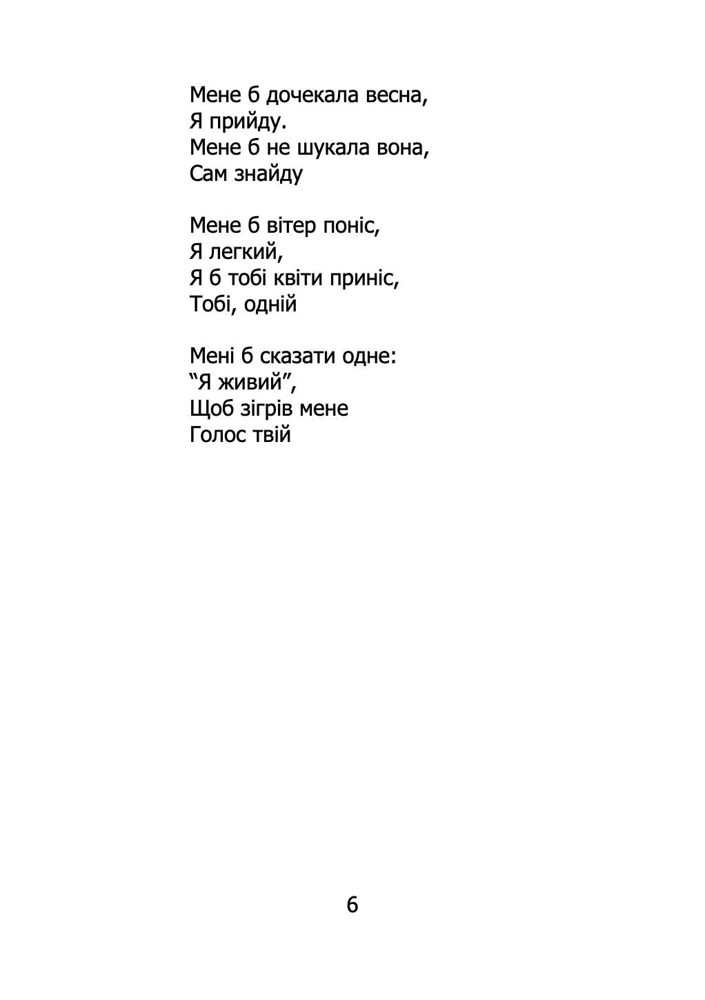
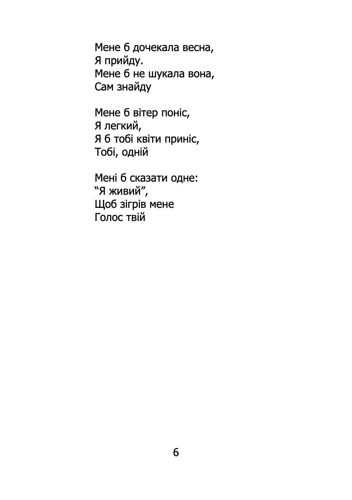

Це моя зовсім-зовсім дебютна збірка, написана в 2005 році, коли я лише тільки почав писати. Юнацький максималізм, недосконалі рими, помилки, все як має бути в 17 років. В паперовому варіанті в мене не залишилося, але думаю, що вона мала б бути тут, суто як нагадування про те, що всі колись з чогось починають.

© Денис Боднар